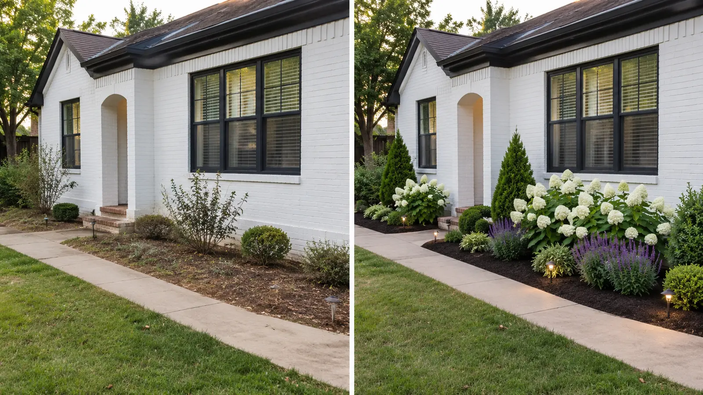
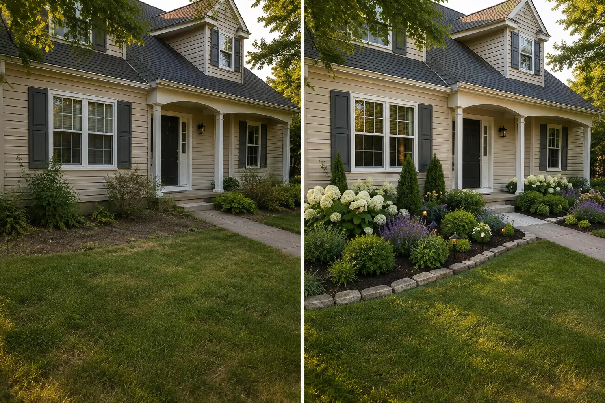

Focused Start
$29
One small bed, mailbox, porch corner or similarly focused area.
See DetailsSend photos of your real outdoor space and receive custom visual concepts, plant and material direction, and a clear layout before you buy or install anything.
Remote digital design only. Physical landscaping and installation are not included.

Every project begins with the actual shape, scale, light and constraints of your property—not a generic inspiration photo.
 Digital Design Concept01 / Most requested
Digital Design Concept01 / Most requested
Foundation beds, entrances, curb appeal and awkward open areas.
 Digital Design Concept02 / Outdoor living
Digital Design Concept02 / Outdoor living
Seating, privacy, planting and practical movement.
 Digital Design Concept03 / Focused spaces
Digital Design Concept03 / Focused spaces
Layered planting for compact, high-impact areas.
 Digital Design Concept04 / Function + style
Digital Design Concept04 / Function + style
Clear zones for gathering, circulation and planting.
 Digital Design Concept05 / Complete scope
Digital Design Concept05 / Complete scope
One consistent direction across connected outdoor spaces.
A focused four-step process keeps the work grounded in your real property.
Send clear photos, location, measurements and what must stay or change.
Compare custom directions built specifically around the submitted area.
Choose the concept that fits your style, budget and maintenance priorities.
Follow the plant, material and layout guidance yourself or with a local installer.
Every transformed image remains clearly labeled as a digital design concept.

Front yard hierarchy, backyard zoning and focused-space planting—each built from the supplied view.
A plant list alone cannot show scale, rhythm, circulation or how materials work together. A visual direction lets you compare those decisions before permanent work begins.
Front yards, backyards, patios, focused beds and connected properties—each beginning with client-supplied photographs and priorities.
About the StudioThe correct package depends on the size and complexity of the real property.
One small bed, mailbox, porch corner or similarly focused area.
See DetailsMore directions for one compact outdoor area.
See DetailsOne medium yard or patio, or two directly connected spaces.
See DetailsA large property or several spaces that need one direction.
See DetailsThe images helped me clearly visualize my front yard, and I’m excited to bring it to life.Keilana / Verified Etsy review
Reviews belong here only when they are verified. Browse the official Etsy shop for current client feedback rather than relying on invented testimonials.
View Verified Etsy ReviewsOriginal, practical guidance focused on mature scale, site constraints, materials and maintenance.

Build around mature size, clear access, drainage and realistic maintenance.
Read article →
Protect circulation and open ground while creating useful outdoor rooms.
Read article →Share clear photos and priorities so the correct scope can be confirmed before Etsy checkout.